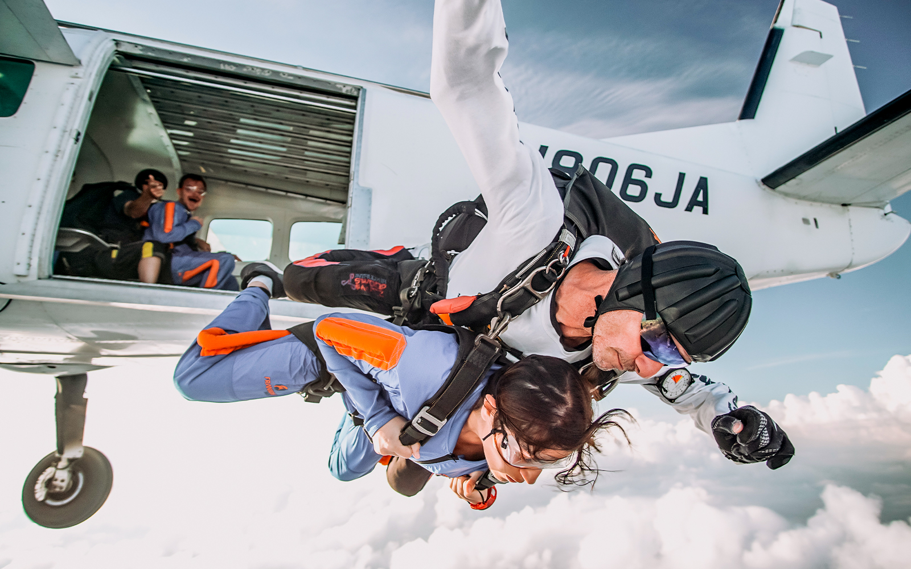

About Skydiving
History
Skydiving, also known as parachuting, is an exhilarating sport that involves jumping from an aircraft and free-falling before deploying a parachute to slow the descent. The history of skydiving dates back to the early 20th century, with significant advancements in safety and technique over the years. Today, skydiving is a popular activity for thrill-seekers and adventurers around the world. The sport is known for its adrenaline-pumping experiences and breathtaking views. Skydiving centers offer tandem jumps for beginners, as well as advanced training for experienced jumpers. The community of skydivers is passionate and welcoming, always eager to share the joy of flight.
Types of Jumps
Skydiving offers a variety of jump types to suit different levels of experience and thrill. Tandem jumps are perfect for beginners, where an instructor is harnessed to the jumper for a safe and guided experience. Solo jumps require more training and certification, allowing jumpers to experience the freedom of freefall on their own. Formation skydiving involves multiple jumpers creating patterns and formations in the sky. Wingsuit flying is an advanced form of skydiving where jumpers wear a special suit that allows them to glide through the air. Each type of jump offers a unique experience and a different perspective of the sky. Skydiving is not just about the jump; it's about the community, the preparation, and the unforgettable memories created with each leap.
- Skydiving Official Website
- Skydiving Locations
- Skydiving History
- Skydiving News

Visit USPA Learn More About Skydiving